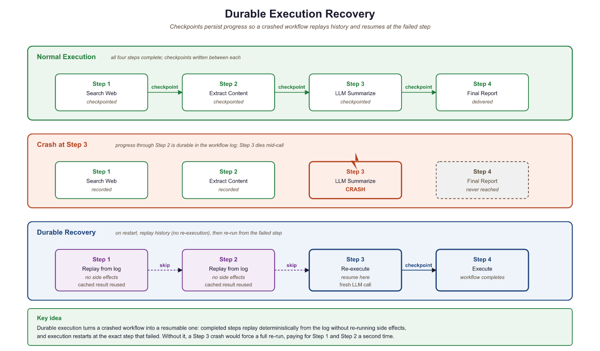
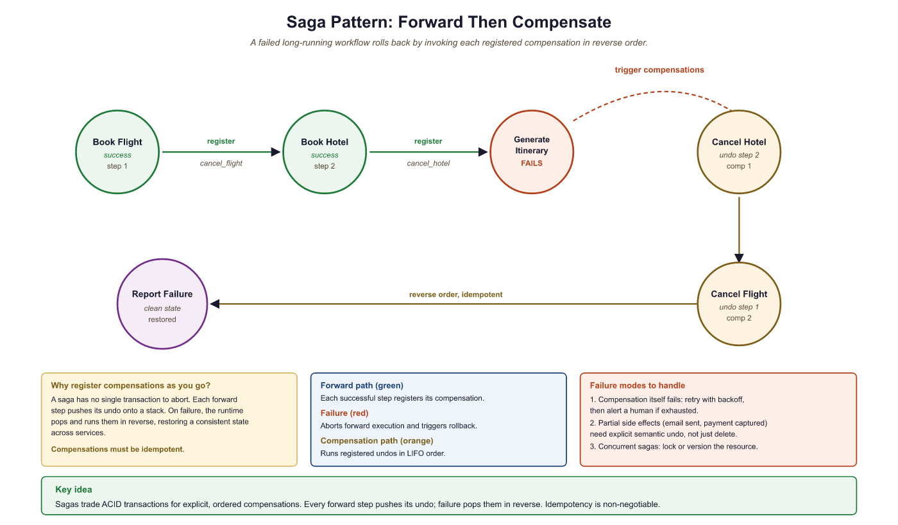
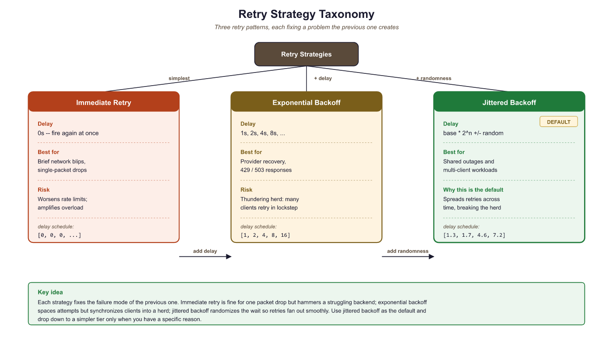

A workflow that cannot survive a server restart is not a workflow. It is a prayer.
Anonymous infrastructure engineer, after a 3 AM incident
LLM agent workflows that span minutes or hours will inevitably encounter failures, and losing progress on a 20-step research pipeline is unacceptable in production. Durable execution frameworks (Temporal, Inngest, LangGraph persistence) solve this by persisting workflow state at each significant step, enabling automatic recovery from crashes, provider outages, and infrastructure interruptions. This section covers the three major approaches to durability, from infrastructure-level guarantees to application-level checkpointing, and shows how to integrate them with the deployment patterns from Section 29.1 and the agent architectures from Chapter 21.
Prerequisites
This section builds on the deployment architecture from Section 29.1, the LLMOps practices in Section 29.4, and the gateway patterns in Section 29.5. Familiarity with tool-calling agents (Chapter 22) and the error recovery patterns in Section 25.4 will provide useful context.
29.6.1 Why LLM Agents Need Durable Execution
Consider an agent that performs a 20-step research workflow: it searches the web, reads documents, extracts structured data, calls multiple LLM providers, writes intermediate summaries, and produces a final report. If the process crashes at step 18, a naive implementation loses all prior work. The user waits again, pays again, and hopes the second run completes without interruption. In production, this is unacceptable.
The problem deepens when you consider the types of failures that plague LLM systems. Provider rate limits cause temporary 429 errors. Network timeouts interrupt streaming responses mid-token. Context windows overflow when an agent accumulates too much history. Provider outages take entire model endpoints offline for minutes or hours. Memory pressure on worker nodes causes out-of-memory kills. Deployments roll forward, terminating in-flight requests. Each of these failures is transient, meaning the operation would succeed if retried, but only if the system remembers where it left off.
Durable execution solves this by persisting the state of a workflow at each significant step. When a failure occurs, the system resumes from the last completed checkpoint rather than restarting from scratch. The workflow function itself looks like ordinary sequential code, but the runtime guarantees that each step executes exactly once, even across process restarts, machine failures, or deployment rollouts. This guarantee, sometimes called "exactly-once semantics," transforms the reliability story for long-running agent pipelines.
LLM agent workflows have a natural split between deterministic logic (the plan: "first search, then summarize, then verify") and non-deterministic operations (the LLM calls, API requests, and tool invocations that produce unpredictable results). Durable execution frameworks exploit exactly this split. The deterministic orchestration logic is replayed from history on recovery, while non-deterministic operations are recorded and never re-executed. This maps perfectly to the agent pattern: the planning loop is deterministic, the LLM calls and tool uses are not. Frameworks like Temporal, Inngest, and LangGraph each implement this principle with different trade-offs, as we explore below.
An early LangGraph user reported that their 45-step research agent crashed at step 42 due to an OpenAI rate limit, then resumed seamlessly from the checkpoint after the cooldown expired. The agent's final report was indistinguishable from an uninterrupted run. The user's reaction: "It felt like saving a video game, except the game is a PhD research assistant."

29.6.2 Temporal: Infrastructure-Level Durability
Temporal is an open-source durable execution platform originally developed at Uber (as Cadence) and now maintained by Temporal Technologies. It provides two core abstractions: workflows and activities. A workflow is a function that must be deterministic: given the same inputs and the same history of activity results, it must make the same decisions. An activity is a function that performs non-deterministic work: calling an LLM, querying a database, sending an email, or invoking a tool.
The Temporal server persists every activity result in an event history. When a worker crashes and restarts, the workflow function replays from the beginning, but instead of re-executing activities, it reads their recorded results from history. The replay is fast (no network calls) and produces the same execution state as the original run. Workers are stateless processes that poll task queues for work; you can scale them horizontally and restart them at will without losing workflow progress.
For LLM agents, the deterministic/non-deterministic split maps cleanly onto the workflow/activity boundary. The agent's control loop (deciding which tool to call next, routing based on LLM output, aggregating results) lives in the workflow. Each LLM call, tool invocation, and external API request is wrapped as an activity with its own retry policy, timeout, and heartbeat interval.
import asyncio
from datetime import timedelta
from temporalio import activity, workflow
from temporalio.client import Client
from temporalio.worker import Worker
from dataclasses import dataclass
@dataclass
class ResearchRequest:
topic: str
max_sources: int = 5
budget_usd: float = 2.0
@dataclass
class ResearchResult:
summary: str
sources: list[str]
total_cost: float
# --- Activities: non-deterministic operations ---
@activity.defn
async def search_web(query: str) -> list[str]:
"""Search the web and return relevant URLs."""
# Calls an external search API (non-deterministic)
results = await search_client.search(query, max_results=10)
return [r.url for r in results]
@activity.defn
async def extract_content(url: str) -> str:
"""Fetch and extract main content from a URL."""
activity.heartbeat() # Signal liveness during long downloads
return await content_extractor.extract(url)
@activity.defn
async def llm_summarize(texts: list[str], topic: str) -> str:
"""Call an LLM to synthesize a research summary."""
response = await llm_client.chat.completions.create(
model="gpt-4o",
messages=[
{"role": "system", "content": "Summarize the following sources."},
{"role": "user", "content": f"Topic: {topic}\n\nSources:\n" +
"\n---\n".join(texts)},
],
)
return response.choices[0].message.content
# --- Workflow: deterministic orchestration ---
@workflow.defn
class ResearchWorkflow:
"""A durable research agent that survives crashes at any step."""
@workflow.run
async def run(self, request: ResearchRequest) -> ResearchResult:
# Step 1: Search (retries up to 3 times on failure)
urls = await workflow.execute_activity(
search_web,
request.topic,
start_to_close_timeout=timedelta(seconds=30),
retry_policy=RetryPolicy(maximum_attempts=3),
)
# Step 2: Extract content from each source (parallel)
contents = []
for url in urls[: request.max_sources]:
content = await workflow.execute_activity(
extract_content,
url,
start_to_close_timeout=timedelta(seconds=60),
heartbeat_timeout=timedelta(seconds=15),
retry_policy=RetryPolicy(maximum_attempts=2),
)
contents.append(content)
# Step 3: Synthesize with LLM
summary = await workflow.execute_activity(
llm_summarize,
args=[contents, request.topic],
start_to_close_timeout=timedelta(seconds=120),
retry_policy=RetryPolicy(
maximum_attempts=5,
backoff_coefficient=2.0,
initial_interval=timedelta(seconds=2),
),
)
return ResearchResult(
summary=summary,
sources=urls[: request.max_sources],
total_cost=0.0, # Tracked via gateway
)29.6.2.1 The OpenAI Agents SDK Integration
The OpenAI Agents SDK (formerly the Swarm framework) provides an
activity_as_tool helper that bridges Temporal activities into the SDK's
tool-calling interface. This lets you define durable, retryable operations as Temporal
activities and expose them to an agent as callable tools. The agent's LLM decides
which tools to invoke, and Temporal guarantees that each invocation is persisted,
retried on failure, and never duplicated.
from temporalio import activity, workflow
from agents import Agent, Runner
from agents.extensions.temporal import activity_as_tool
# Define activities as durable tool implementations
@activity.defn
async def query_database(sql: str) -> str:
"""Execute a read-only SQL query and return results as JSON."""
result = await db_pool.fetch(sql)
return json.dumps([dict(row) for row in result])
@activity.defn
async def send_notification(channel: str, message: str) -> str:
"""Send a Slack notification. Side effect: must not be duplicated."""
await slack_client.post_message(channel=channel, text=message)
return f"Notification sent to {channel}"
# Wrap activities as agent tools inside a workflow
@workflow.defn
class AnalystAgentWorkflow:
@workflow.run
async def run(self, user_query: str) -> str:
# Temporal activities become agent tools
db_tool = activity_as_tool(
query_database,
start_to_close_timeout=timedelta(seconds=30),
)
notify_tool = activity_as_tool(
send_notification,
start_to_close_timeout=timedelta(seconds=10),
)
agent = Agent(
name="data-analyst",
instructions="You analyze data and report findings.",
tools=[db_tool, notify_tool],
)
result = await Runner.run(agent, user_query)
return result.final_outputactivity_as_tool. Each tool call the agent makes is executed as a Temporal activity with full durability guarantees. The send_notification activity is particularly important: because Temporal records activity completions, the notification is sent exactly once even if the worker crashes and the workflow replays.29.6.3 Inngest: Event-Driven Durable Functions
Inngest takes a different approach to durable execution. Instead of a separate server
and worker infrastructure, Inngest provides a lightweight SDK that runs inside your
existing web application (FastAPI, Next.js, Flask). Functions are triggered by events
and broken into steps using the step.run() API. Each step is automatically
checkpointed, retried on failure, and observable through Inngest's built-in dashboard.
The event-driven model fits naturally into systems where multiple loosely coupled services react to the same events. When a user uploads a document, one function extracts text, another generates embeddings, and a third triggers a summarization agent. Each function runs independently, with its own retry logic and step-level checkpointing. This is choreography (services react to events) rather than orchestration (a central coordinator directs services). Choreography excels when the workflow is a fan-out of independent tasks; orchestration excels when tasks have complex dependencies and conditional branching.
import inngest
client = inngest.Inngest(app_id="llm-pipeline")
@client.create_function(
fn_id="research-agent",
trigger=inngest.TriggerEvent(event="research/requested"),
retries=3,
)
async def research_agent(ctx: inngest.Context, step: inngest.Step):
topic = ctx.event.data["topic"]
# Step 1: Search (checkpointed, retried independently)
urls = await step.run("search-web", lambda: search_web(topic))
# Step 2: Extract content in parallel fan-out
contents = []
for i, url in enumerate(urls[:5]):
content = await step.run(
f"extract-{i}",
lambda u=url: extract_content(u),
)
contents.append(content)
# Step 3: Summarize with LLM (separate retry budget)
summary = await step.run(
"llm-summarize",
lambda: llm_summarize(contents, topic),
)
# Step 4: Emit completion event for downstream consumers
await step.send_event(
"research/completed",
data={"topic": topic, "summary": summary},
)
return {"summary": summary, "sources": urls[:5]}step.run() call is individually checkpointed: if the function fails during step 3, it resumes from that point without re-executing steps 1 and 2. The step.send_event() at the end enables downstream functions (notification, indexing, reporting) to react without tight coupling.Who: A senior backend engineer at a document intelligence company building an automated ingestion pipeline for enterprise contracts.
Situation: The pipeline had five stages: extract text, generate embeddings, store in a vector database, run a quality check, and notify the user. Three separate teams owned different stages, and the system processed roughly 5,000 documents per day.
Problem: The initial event-driven (choreographed) architecture using Inngest fired a document/uploaded event that triggered five independent functions. When embedding generation failed silently, the notification function still reported success because it had no visibility into upstream failures. Users discovered missing documents days later.
Decision: The team evaluated two options. Keeping choreography meant adding failure events (embedding/failed) and a reconciliation job to catch inconsistencies. Switching to orchestration (Temporal) meant a single workflow with full visibility, conditional logic (skip quality checks for documents under 100 words), and automatic retries with a different embedding model on failure. They chose orchestration for the critical path and kept choreography for non-critical side effects like analytics and audit logging.
Result: Silent failures dropped to zero on the critical path. Mean time to detect pipeline errors fell from 2 days to under 30 seconds. The three teams still deployed independently because each stage was a Temporal activity with a versioned interface.
Lesson: Choose orchestration when you need transactional guarantees and cross-step error handling. Choose choreography when steps are genuinely independent and loose coupling between teams matters more than end-to-end visibility.
29.6.4 LangGraph Persistence: Application-Level Checkpointing
LangGraph, the agent framework from LangChain, provides its own persistence layer through checkpointers. After each node in a LangGraph state graph executes, the full graph state is serialized and stored. This enables several powerful capabilities: resuming interrupted agents, time-travel debugging (inspecting the state at any historical node), and human-in-the-loop patterns where the graph pauses at a designated node, waits for human approval, and then continues.
LangGraph checkpointing operates at the application level: the framework manages state persistence as part of its graph execution engine. This contrasts with Temporal, which operates at the infrastructure level: the Temporal server manages durability for any code running inside workflows, regardless of the application framework. The distinction matters for operational complexity. LangGraph persistence requires only a database (PostgreSQL, SQLite, or Redis); Temporal requires a dedicated server cluster with its own database, metrics, and operational runbooks.
from langgraph.graph import StateGraph, START, END
from langgraph.checkpoint.postgres import PostgresSaver
from typing import TypedDict, Annotated
from langgraph.graph.message import add_messages
class ResearchState(TypedDict):
messages: Annotated[list, add_messages]
sources: list[str]
summary: str
status: str
def search_node(state: ResearchState) -> dict:
"""Search for sources. State is checkpointed after this node."""
urls = web_search(state["messages"][-1].content)
return {"sources": urls, "status": "searched"}
def summarize_node(state: ResearchState) -> dict:
"""Summarize sources with an LLM call."""
response = llm.invoke(
f"Summarize these sources about the topic:\n" +
"\n".join(state["sources"])
)
return {"summary": response.content, "status": "summarized"}
def review_node(state: ResearchState) -> dict:
"""Human-in-the-loop review point. Graph pauses here."""
return {"status": "awaiting_review"}
# Build the graph with checkpointing
checkpointer = PostgresSaver.from_conn_string(DATABASE_URL)
graph = StateGraph(ResearchState)
graph.add_node("search", search_node)
graph.add_node("summarize", summarize_node)
graph.add_node("review", review_node)
graph.add_edge(START, "search")
graph.add_edge("search", "summarize")
graph.add_edge("summarize", "review")
graph.add_edge("review", END)
# Compile with checkpointer and interrupt_before for HITL
app = graph.compile(
checkpointer=checkpointer,
interrupt_before=["review"], # Pause before human review
)
# Start execution (pauses at review node)
config = {"configurable": {"thread_id": "research-42"}}
result = app.invoke(
{"messages": [("user", "Research quantum error correction")]},
config=config,
)
# result["status"] == "summarized"; graph is paused
# Later: human approves, resume from checkpoint
app.invoke(None, config=config) # Continues from review nodeinterrupt_before. When the application calls invoke(None, config) later (minutes, hours, or days), execution resumes from the exact checkpoint. Time-travel debugging is possible by querying the checkpointer for any historical state snapshot.The comparison between LangGraph and Temporal persistence comes down to scope and operational overhead. LangGraph checkpointing is tightly integrated with its graph abstraction, making it simple to add persistence to any LangGraph agent. However, it only covers LangGraph workflows; if your system includes non-LangGraph components (data pipelines, email senders, payment processors), those need their own durability story. Temporal provides a universal durability layer for any code, but requires deploying and operating a separate infrastructure component. For teams already running Kubernetes, Temporal's operational cost is manageable. For teams that want minimal infrastructure, LangGraph's built-in checkpointing (or Inngest's managed service) offers a lower barrier to entry.

29.6.5 Retry and Recovery Strategies
Retries are the first line of defense against transient failures, but naive retry logic can cause more harm than good. Retrying too aggressively amplifies load on an already stressed provider. Retrying non-idempotent operations creates duplicate side effects. Retrying indefinitely wastes budget on requests that will never succeed. A production retry strategy must address all three concerns.

29.6.5.1 Retry Taxonomy
Three retry patterns appear in production LLM systems. Immediate retry re-sends the request with no delay; this works for transient network blips but worsens rate-limit situations. Exponential backoff doubles the delay between each attempt (1s, 2s, 4s, 8s), giving the provider time to recover. Jittered backoff adds randomness to the delay (e.g., 1s +/- 0.3s) to prevent the "thundering herd" problem where many clients retry simultaneously after a shared outage. Jittered exponential backoff is the recommended default for LLM API calls.
import random
import asyncio
from typing import TypeVar, Callable, Awaitable
T = TypeVar("T")
async def retry_with_budget(
fn: Callable[..., Awaitable[T]],
*args,
max_attempts: int = 5,
initial_delay: float = 1.0,
backoff_factor: float = 2.0,
jitter: float = 0.3,
max_cost_usd: float = 1.0,
cost_tracker: "CostTracker | None" = None,
**kwargs,
) -> T:
"""Retry with jittered exponential backoff and budget awareness.
Stops retrying if cumulative cost exceeds the budget threshold,
preventing runaway spend on requests that consistently fail
after consuming tokens (e.g., partial streaming responses).
"""
delay = initial_delay
last_exception = None
for attempt in range(1, max_attempts + 1):
# Budget gate: stop if we have already spent too much
if cost_tracker and cost_tracker.total_cost > max_cost_usd:
raise BudgetExceededError(
f"Retry budget exhausted: ${cost_tracker.total_cost:.4f} "
f"exceeds ${max_cost_usd:.2f} limit after {attempt - 1} attempts"
)
try:
return await fn(*args, **kwargs)
except RateLimitError as e:
last_exception = e
# Respect Retry-After header if present
delay = max(delay, get_retry_after(e))
except (TimeoutError, ConnectionError) as e:
last_exception = e
except ContextWindowOverflowError:
# Not transient: retrying the same input will always fail
raise
if attempt < max_attempts:
jittered_delay = delay * (1 + random.uniform(-jitter, jitter))
await asyncio.sleep(jittered_delay)
delay *= backoff_factor
raise MaxRetriesExceededError(
f"Failed after {max_attempts} attempts"
) from last_exceptionRetry-After header from rate-limit responses is respected to avoid hammering a provider that has explicitly requested a cooldown period.29.6.5.2 Idempotency in Agent Steps
An operation is idempotent if executing it multiple times produces the same result as executing it once. LLM completions are naturally idempotent (at temperature 0): calling the same model with the same prompt returns the same output and charges the same cost. But many agent actions are not idempotent: sending an email, creating a database record, charging a credit card, or posting to an API. When a durable execution framework retries or replays a step, non-idempotent actions risk duplication.
The standard solution is an idempotency key: a unique identifier attached to each operation. The receiving system checks whether it has already processed a request with that key and returns the cached result if so. For agent workflows, generate the idempotency key from the workflow ID and step number, ensuring that replays produce the same key and are correctly deduplicated.

29.6.5.3 Compensation Logic for Side Effects
When a multi-step workflow fails partway through, some steps may have already produced side effects that need to be undone. If an agent books a flight in step 3 but fails to book a hotel in step 5, the flight booking may need to be cancelled. This pattern is called compensation (or the "saga pattern" in distributed systems). Each step that produces a side effect registers a compensation function. If the workflow fails, the framework executes compensations in reverse order, cleaning up partial work.
@workflow.defn
class BookingWorkflow:
"""Saga pattern: each step registers a compensation action."""
@workflow.run
async def run(self, request: TravelRequest) -> BookingResult:
compensations: list[tuple[str, dict]] = []
try:
# Step 1: Book flight
flight = await workflow.execute_activity(
book_flight, request.flight_details,
start_to_close_timeout=timedelta(seconds=60),
)
compensations.append(("cancel_flight", {"id": flight.id}))
# Step 2: Book hotel
hotel = await workflow.execute_activity(
book_hotel, request.hotel_details,
start_to_close_timeout=timedelta(seconds=60),
)
compensations.append(("cancel_hotel", {"id": hotel.id}))
# Step 3: LLM generates itinerary summary
itinerary = await workflow.execute_activity(
generate_itinerary,
args=[flight, hotel, request.preferences],
start_to_close_timeout=timedelta(seconds=120),
)
return BookingResult(
flight=flight, hotel=hotel, itinerary=itinerary
)
except Exception as e:
# Execute compensations in reverse order
for comp_name, comp_args in reversed(compensations):
await workflow.execute_activity(
comp_name, comp_args,
start_to_close_timeout=timedelta(seconds=30),
)
raise WorkflowFailedError(f"Booking failed: {e}") from eBudget-aware retries require accurate cost tracking, which means your AI gateway must report token usage for failed requests, not just successful ones. Many providers charge for tokens consumed in partial responses (e.g., a streaming response that times out after 500 tokens). If your cost tracker only counts successful completions, the budget gate will underestimate actual spend. Always record token usage from the response headers, including 4xx and 5xx responses that include a usage field.
29.6.6 Observability for Long-Running Workflows
Long-running agent workflows (minutes to hours) require observability patterns beyond what short-lived request/response APIs need. The observability practices from Chapter 28 provide the foundation; this section extends them to durable workflows.
Distributed tracing connects every step in a workflow into a single trace. When a Temporal workflow calls five activities across three workers, or when an Inngest function fans out into parallel steps, the trace ID propagates through all operations. This lets you visualize the entire workflow timeline in tools like Jaeger, Grafana Tempo, or Datadog, identifying bottlenecks (which activity took 45 seconds?) and failure points (which retry finally succeeded?). Temporal provides built-in integration with OpenTelemetry; Inngest and LangGraph offer trace export through their observability APIs.
Stalled workflow detection is essential for catching agents that are
stuck rather than failed. A workflow might be waiting for an activity that silently
hangs (the LLM provider accepts the request but never responds). Heartbeat timeouts
address this at the activity level: if an activity does not call heartbeat()
within the configured interval, the framework considers it failed and schedules a retry.
At the workflow level, set a "workflow execution timeout" that caps the total wall-clock
time for the entire workflow, preventing indefinite hangs.
Cost-per-execution tracking aggregates token usage and provider costs across all steps in a single workflow execution. This metric is critical for understanding the economics of autonomous agents. A research agent might consume \$0.12 per execution on average, but outliers (where the agent enters a retry loop or explores an unusually large search space) might cost \$5.00 or more. Tracking cost distribution per workflow type, combined with the gateway-level budget enforcement from Section 29.5, enables both real-time cost control and historical cost analysis.
29.6.7 Choosing a Framework
The three frameworks covered in this section serve different needs. Temporal is the right choice when you need infrastructure-level durability for complex, long-running workflows with strict exactly-once guarantees. It excels in environments that already run Kubernetes and have platform engineering teams comfortable with operating stateful infrastructure. The OpenAI Agents SDK integration makes it particularly appealing for teams building tool-heavy agents that interact with external systems.
Inngest is the right choice when you want durable execution without operating additional infrastructure. Its event-driven model and step-level checkpointing provide strong durability guarantees with minimal setup. It fits teams that prefer managed services and want to add durability to existing web applications rather than building a separate worker infrastructure.
LangGraph persistence is the right choice when you are already using LangGraph for agent orchestration and want to add checkpointing, time-travel debugging, and human-in-the-loop capabilities with minimal additional complexity. Its durability guarantees are scoped to the LangGraph execution engine, making it simpler but less general than Temporal.
These frameworks are not mutually exclusive. A common production architecture uses LangGraph for agent logic, wrapped inside a Temporal workflow that provides infrastructure-level durability, with an Inngest event bus connecting the workflow to other services. The key principle is to match the durability guarantee to the cost of failure: lightweight summarization tasks may need only LangGraph checkpointing, while a booking agent that charges credit cards needs Temporal's exactly-once semantics.
The choice between orchestration frameworks is fundamentally a question about where the state lives. In Temporal, state lives in the Temporal server's event history, and your workers are stateless. In LangGraph, state lives in the checkpointer database, and your application server manages the graph execution. In Inngest, state lives in Inngest's managed platform, and your function code is stateless. Each approach has different failure modes: Temporal survives worker crashes but requires a healthy Temporal cluster; LangGraph survives application restarts but depends on the checkpointer database; Inngest survives application failures but depends on the Inngest platform. Understanding where your state lives is the first step toward understanding what can go wrong.
- LLM agent workflows need durable execution because multi-step processes that take minutes or hours will inevitably encounter failures, timeouts, and infrastructure interruptions.
- Temporal provides infrastructure-level durability with automatic retry, state persistence, and exactly-once execution semantics for long-running workflows.
- Inngest offers event-driven durable functions with a simpler developer experience, ideal for serverless LLM pipelines.
- LangGraph persistence provides application-level checkpointing within the LangGraph framework, enabling conversation and agent state recovery.
- Retry strategies for LLM calls must account for non-determinism: the same prompt may succeed on retry even without changes, making simple retries more effective than for deterministic services.
Exercises
An e-commerce company builds an agent that processes customer returns: (1) validate the return request, (2) check inventory for the returned item, (3) generate a return shipping label, (4) issue a refund, (5) send a confirmation email. Identify which steps need idempotency keys, which need compensation logic, and which framework (Temporal, Inngest, or LangGraph) best fits this use case. Justify your choice.
Answer Sketch
Steps 3 (shipping label), 4 (refund), and 5 (email) need idempotency keys because they produce external side effects. Steps 3 and 4 need compensation: if the refund fails, the shipping label should be voided. Temporal is the best fit because the workflow has strict ordering, involves financial transactions requiring exactly-once guarantees, and benefits from the saga pattern for compensation. LangGraph would be insufficient because it does not natively manage external side-effect durability. Inngest could work for the event-driven notification (step 5) but would be harder to use for the transactional booking/refund sequence.
Implement a retry wrapper for LLM API calls that uses jittered exponential backoff. Test it by simulating a provider that returns 429 (rate limit) on the first two attempts and succeeds on the third. Verify that the delays follow the expected backoff pattern and that the total delay stays within bounds.
Answer Sketch
Use the retry_with_budget pattern from Code Fragment 29.6.5. Create a mock LLM client that raises RateLimitError for the first two calls, then returns a valid response. Assert that the function succeeds on the third attempt, that the delay between attempts roughly doubles (accounting for jitter), and that the total elapsed time is between 2.1s and 4.5s (1s + ~2s with jitter). Also test the budget gate by setting max_cost_usd=0.001 and verifying that retries stop when the budget is exceeded.
Build a three-node LangGraph workflow with PostgreSQL checkpointing. Simulate a crash after the second node by killing the process. Restart and verify that the workflow resumes from the checkpoint. Inspect the checkpoint history using the checkpointer API to confirm that all three state snapshots are present.
Answer Sketch
Create a StateGraph with nodes fetch, transform, and report. Use PostgresSaver as the checkpointer. On first run, inject a sys.exit(1) after the transform node. Restart the process and call app.invoke(None, config) with the same thread_id. The graph should execute only the report node. Query checkpointer.list(config) to verify three checkpoint entries exist with sequential checkpoint IDs.
Instrument a Temporal workflow with OpenTelemetry to track cost per execution. Export traces and custom metrics (token count, provider cost, retry count) to a Grafana dashboard. Create alerts for executions that exceed 3x the median cost and for workflows that stall for more than 5 minutes without a heartbeat.
Answer Sketch
Use the temporalio.contrib.opentelemetry interceptor to generate spans for each workflow and activity. Add custom span attributes for llm.token_count, llm.cost_usd, and llm.retry_count in each activity. Export to Grafana via the OpenTelemetry Collector. Create a Grafana panel showing cost distribution as a histogram, with a threshold line at 3x median. Use Grafana alerting rules on the temporal_activity_schedule_to_start_latency metric (which indicates task queue backlog) and on missing heartbeats (use a "no data" alert on the heartbeat metric with a 5-minute window).
- Temporal Technologies. "Temporal Documentation: Workflows, Activities, and Workers." docs.temporal.io/develop/python, 2024.
- Temporal Technologies. "Building AI Applications with Temporal." temporal.io/ai, 2025.
- OpenAI. "Agents SDK: Temporal Integration." openai.github.io/openai-agents-python/extensions/temporal, 2025.
- Inngest. "Durable Functions for AI Agents." inngest.com/docs, 2025.
- Inngest. "AI Orchestration with Inngest: Step-Level Durability." inngest.com/blog/ai-orchestration, 2025.
- LangGraph. "Persistence and Checkpointing." langchain-ai.github.io/langgraph/concepts/persistence, 2025.
- LangGraph. "Human-in-the-Loop Patterns." langchain-ai.github.io/langgraph/concepts/human_in_the_loop, 2025.
- Google Cloud. "Building Agentic AI Workflows with Temporal and Vertex AI." cloud.google.com/blog, 2025.
- Garcia-Molina, H., and K. Salem. "Sagas." ACM SIGMOD Record 16, no. 3 (1987): 249-259.
- Nygard, Michael. Release It! Design and Deploy Production-Ready Software. 2nd ed. Pragmatic Bookshelf, 2018.
What Comes Next
With production engineering patterns established, the next part of the book covers Safety & Strategy, beginning with Chapter 30: Safety, Ethics, and Regulation. The durable execution and retry infrastructure from this section provides the reliability foundation for the safety-critical systems discussed there.
Bibliography and Further Reading
Durable Execution Frameworks
The authoritative reference for Temporal's durable execution model, explaining how workflows survive process failures through event sourcing and deterministic replay.
Inngest (2024). "Inngest: Durable Functions for AI and Background Jobs." Inngest Documentation.
Documentation for the Inngest serverless durable execution platform, which provides step-level checkpointing for LLM agent pipelines without managing infrastructure.
Workflow Orchestration for LLM Agents
LangChain (2024). "LangGraph Persistence: Checkpointing and Recovery." LangGraph Documentation.
Describes LangGraph's built-in persistence layer for agent state checkpointing, enabling automatic recovery of multi-step agent workflows from failures.
Liu, Z., et al. (2023). "AgentBench: Evaluating LLMs as Agents." arXiv:2308.08155.
Benchmarks LLM agent performance across complex multi-step tasks, revealing the failure modes and reliability challenges that motivate durable execution patterns.
Reliability and Fault Tolerance
Qian, C., et al. (2024). "Experiential Co-Learning of Software-Developing Agents." arXiv:2401.02009.
Demonstrates multi-agent workflows with recovery mechanisms that parallel durable execution concepts, showing how agents can learn from and recover from failures.
Comprehensive survey covering agent architectures and their operational challenges, including the reliability and state management problems that durable execution addresses.